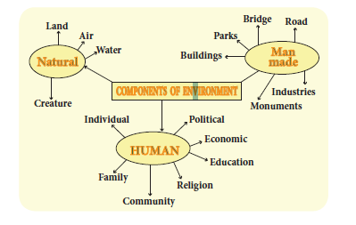
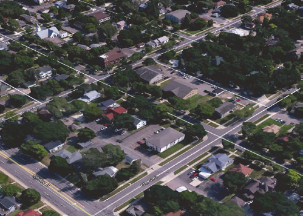
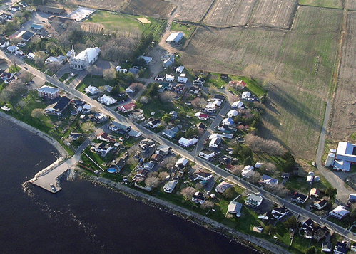
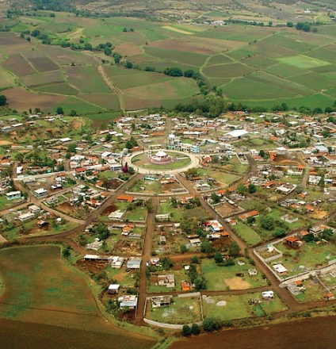
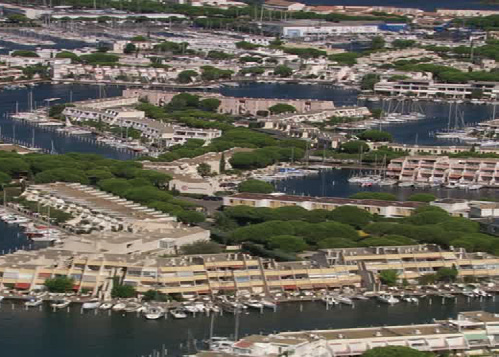
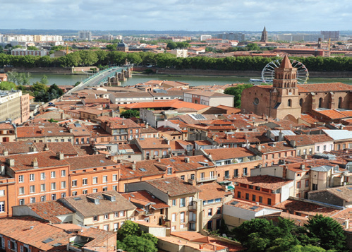
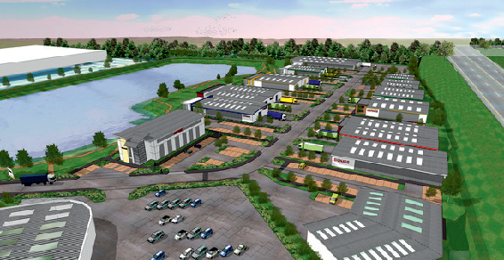
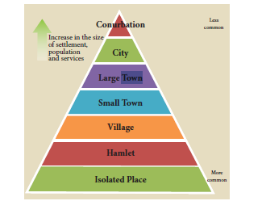
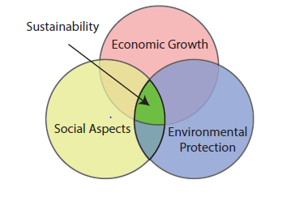
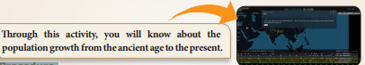

know the components of environment
To understand the various features of human-environment interaction
To know various settlement patterns
To know the different economic activities of man
To understand the environmental effects of human behaviour
Environment is a set of relationships between man and nature. Man has survived through the ages, dwelling within his surrounding called the environment. The word ‘environment’ is derived from the French word ‘environ’ meaning encircled or surrounded. Environment includes both living (biotic) and non living (abiotic) components.
Early man depended entirely on nature for food, clothing and shelter. Man has enjoyed a dominant position over the other living organisms around him because of his erect posture, hands and intelligence. From the paleolithic period to the neolithic period, man has invented and developed the wheel, fire, tools and patterns of agriculture and housing to his comfort, which led him to improve the standard of living making himself technologically advanced. Thus, modern man modified the environment where he multiplied in numbers to increase population and has always extended his territories, leading to the exploitation of natural resources.
The Stockholm Conference, 1972, declared man as both a creator and moulder of his environment. ‘The Earth Summit’, formally known as the United Nations Conference on Environment and Development (UNCED) was held in Rio de Janeiro in 1992.
Environment is generally classified as
(a) Natural environment
(b) Human environment and
(c) Man made environment

Earlier, we have learnt about the natural components of environment such as lithosphere, atmosphere, hydrosphere and biosphere. In this chapter, we will study about the human and man-made components in a detailed manner.
Human environment is defined as the interaction between man as an individual, with his family, occupation and society. It is also related to various cultural aspects such as education, religion, economics and politics.
Man-made environment has been created by man himself for the purpose of fulfilling his needs and to make his life more convenient and easy. For example, building, transport, park , industry, monument, etcetera. To bring equilibrium between man and the environment, man has to study the distribution of population, availability of resources, development in technology, alternate means of fulfilling the increasing demand created by the growing population and other man-made features.
Can you imagine a world without human beings? Humanbeings are important to develop the economy and society. The Latin word 'populus' means 'people'. Population is the total number of people living together in a particular place at the given point of time.
In ancient Greek, ‘demos’ means people and ‘graphis’ means study of measurement. So, ‘Demography’ is the statistical study of human population.
‘It is easy to add but difficult to maintain’ Population is a dynamic phenomenon where the number, distribution and composition are constantly changing. Human population increases as babies are born and decreases as people die. For most of human history, births have only slightly exceeded deaths every year. As a result, human population grew slowly. About the time of Industrial Revolution, it began to increase rapidly.
Natural increase of population is the difference between the birth rate and death rate. In fact population is always increasing but only in very rare cases it may decrease through natural or man-made disasters such as famine, landslides, earthquakes, tsunami, epidemics, extreme weather conditions and war.
Population change refers to an increase or decrease in the population of an area influenced by the number of births, deaths and migration. The population of the world doubled from 500 million in 1650 to 1000 million in1850.The projected population for 2025 and 2050 is about 8 billion and 9 billion respectively.
Population growth refers to an increase in the number of people who reside in a particular area during a particular period.
Census is an official enumeration of population carried out periodically. It records information about the characteristics of population such as age, sex, literacy and occupation. Different countries of the world conduct census every 5 to 10 years as recommended by the United Nations. The first known census was undertaken nearly six thousand years ago by the Babylonians in 3800 BC (BCE). Denmark was the first country in the modern world to conduct a census. In India, the first census was carried out in the year 1872. Censuses have been conducted regularly every tenth year since 1881. The Indian Census is the most comprehensive source of demographic, social and economic data. Have you ever seen a census report? Check in your library.
Population increases when there are more births and immigration. It decreases when there are more deaths and emigration. Population growth, can be calculated as
The Black Death is estimated to have killed 30 - 60 percent of Europe's total population during the 14th century. The dominant explanation for Black Death is attributed to the outbreak of plague.
Population distribution refers to the way in which people are spread out across the earth’s surface.
The world population is not uniformly distributed, owing to the following factors.
Physical factors include temperature, rainfall, soil, relief, water, natural vegetation, distribution of minerals and availability of energy resources.
Regions with historical importance (river valley civilizations), war and constant invasions fall under historical factors responsible for population distribution.
Educational institutions, employment opportunities, manufacturing industries, luxurious amenities, trade and commerce and other facilities encourage dense population in an area.
The World Population Day is observed on 11th July every year. It seeks to raise awareness of global population issues. The United Nations Development Programme started celebrating this event from the year 1989.
Density of population refers to the number of people living per square kilometre. An area is said to be sparsely populated when it has a large area with less number of people. Similarly, smaller the area with a large number of people, is said to be densely populated.
Population Density = Total Population Ddivided by Total land area
The world’s population density is divided into three main groups.
Areas of high density (above 50 people per square kilometer) - East Asia, South Asia, North West Europe & Eastern North America.
Areas of moderate density (10 to 50 people per square kilometer) - The sub tropical regions like Angola, Congo, Nigeria and Zambia in Africa.
Areas of low density (less than 10 people per square kilometer) - Central Africa, Western Australia, Northern Russia, Canada, etc…
The population data of the five most densely populated districts of Tamil Nadu is given below. (Findout the population density and their rank)
District |
Area (square km) |
Population (2011 census) |
Population Density |
Rank |
Chennai |
178.2 |
46,46,732 |
|
|
Kanchipuram |
7857 |
39,98,252 |
|
|
Vellore |
6077 |
39,36,331 |
|
|
Thiruvallur |
3424 |
37,28,104 |
|
|
Salem |
5205 |
34,82,056
|
|
|
Over population is a condition when a country has more people than its resources to sustain. Under Population is a condition where there are too few people to develop the economic potential of a nation fully.
‘India has an official population policy implemented in 1952. India was the first country to announce such a policy. The main objective of this policy was to slow down the rate of population growth, through promotion of various birth control measures.
A settlement can be described as any temporary or permanent unit area where people live, work and lead an organized life. It may be a city, town, village or other agglomeration of buildings. During the early days, man preferred tree branches, caves, pits or even rock cuts as his shelter. As days passed by, man slowly learnt the art of domesticating animals and cultivating food crops. The evolution of farming took place along four major river basins i.e. the Nile, Indus, Hwang Ho, Euphrates - Tigris. Man built huts and mud houses. Slowly settlements came into existence. A settlement generally consisted of a cluster of houses, places of worship and a place of burial. Later, small settlements developed into villages. Several villages together formed a town. Bigger towns developed into cities. Settlements were formed in different shapes, sizes and locations.
On the basis of occupation, settlements may be classified as rural and urban settlements.
Any settlement where most of the people are engaged in primary activities like agriculture, forestry, mining and fishery is known as a rural settlement. Most of the world's settlements are rural, they are mostly stable and permanent. The most important and unique feature of rural settlements is the vast, open spaces with green, pollution-free environment.
Rectangular pattern of settlements are found in plain areas or valleys. The roads are rectangular and cut each other at right angles.

In a linear pattern, the houses are located along a road, railway line and along the edge of the river valley or along a levee.

The pattern of settlement that is found around the lakes, ponds and sea coasts are called circular or semi circular pattern.

Star shaped settlements develop in places where metalled and unmetalled road converged. In the star shaped settlements, houses are spread out along the sides of roads in all directions.

Triangular patterns of rural settlement generally develop at the confluence of rivers.

T-shaped settlements develop at tri-junctions of the roads (T), while Y-shaped settlements emerge as the places where two roads converge with the third one. Cruciform settlements develop on the cross-roads which extend in all four directions.

The arrangement of roads is almost circular which ends at the central location or nucleus of the settlement around the house of the main landlord of the village or around a mosque, temple or church.
Urban is the term related to cities and towns where people are primarily engaged in non-agricultural activities, such as secondary, tertiary and quaternary activities. The common characteristic feature of an urban unit is that they are compact, congested and liable to a large number of population. They comprise of mostly man-made structures that fulfill the requirements of a society's administrative, cultural, residential and religious functions. The factors responsible for urbanization are better employment opportunities, suitable conditions for business, education, transport, etc
Urban centres are classified as towns, cites, metropolitan cities, mega cities, conurbation, etc., depending on the size and services available and functions rendered to it.

A town is generally larger than a village, but smaller than a city. It has a population of less than 1 lakh. Example Arakkonam near Chennai
Cities are much larger than towns and have a greater number of economic functions. The population in cities are estimated to be more than 1 lakh. Example Coimbatore
Cities accommodating population between 10 lakhs and 50 lakhs are metropolitan cities. Example Madurai
Cities with more than 50 lakh population are called Megacities. Example Greater Chennai
A conurbation is a region comprising of a number of cities, large towns and other urban areas. Example: Delhi conurbation
Damascus is widely believed to be the oldest, continuously inhabited city in the world, dating back to at least 11, 000 years.
Tokyo is the world's largest city with the greater Tokyo area, housing about 38 million inhabitants.
According to the Quality of Living Rankings by Consultancy Mercer, in 2016, the city offering the best quality of life was Vienna, with Zurich falling second. (Sources: United Nations, UNESCO, Mercer).
Economic activities are those efforts or actions that involve production, distribution and consumption of commodities and services at all levels within a region.
Primary Activities pertain to the extraction of raw materials from the earth's surface. For example: food gathering, hunting, lumbering, fishing, cattle rearing, mining and agriculture.
Secondary Activities transform raw materials into finished goods. For example: Iron and Steel industries, automobile manufacturing etc.
Activities which by themselves do not produce goods, but support the process of production are called tertiary activities. For example: Transport, communication, banking, storage and trade.
The activities related to Research and Development, as well as knowledge are called Quaternary activities. For Example, Services like consultation, education and banking
The activities that focus on the creation, rearrangement and interpretation of new and existing ideas are called quinary activities. It includes the highest levels of decision making in a society or economy. Example Senior business executives, scientists and policy makers in the Government.
Environment is the basic life support system that provides air, water, food and land to all living organisms. But human beings degrade the environment through rapid industrialization
Some of the environmental issues are:
Deforestation
Pollution such as air, water, noise, etc
Urbanisation
Fracking
Waste disposal
Deforestation is the cutting down of trees permanently by the people to clear forests in order to make the land available for other uses.
Deforestation results in many effects like floods and droughts, loss of soil fertility, air pollution, extinction of species, global warming, spread of deserts, depletion of water resource, melting of ice caps and glaciers, rise in sea level and depletion of ozone layer.
The United Nations Conference on Environment and Development (UNCED) by name Earth Summit Conference held at Rio de Janeiro, Brazil, on June 1992 concluded that all member countries should reduce their emission of carbon dioxide, methane and other green house gases thought to be responsible for global warming.
One.Conservation of forests can be done through the regulation of cutting of trees.
Two.Control over forest fire: Through regular monitoring and controlling the movement of the people forest fire can be prevented.
Three. Proper use of forest products: We depend on forests for our survival from the air we breathe, to the wood we use. Besides providing habitats for animals and livelihoods for humans, forest products are one of the most essential things in our day to day life. Therefore, we must use forest products properly.
In 1987, the Brundtland Commission cited the definition of sustainability.
"Sustainable development is development that meets the needs of the present without compromising the ability of future generation to meet their own needs".
For sustainable development to be achieved, it is crucial to harmonize three core elements: economic growth, social aspects and environmental protection. These elements are interconnected and are crucial for the well-being of individuals and societies. To achieve true sustainability, we need to balance the economic, social and environmental factors of sustainability in equal harmony.

The ability of a social system such as a country, family or organization to function at a defined level of social well being and harmony is called social sustainability. Problems like war, endemic poverty, widespread injustice and low education rates are symptoms of a system in socially unsustainable. The balancing capacity of a government in maintaining peaceful existence towards other countries and at the same time providing the requirements of its citizens without affecting the environment creates social sustainability.
The people on earth consume far more than what is their fair share.
The economic sustainability is successfully implemented through strong Public Distrubution System.
Economic sustainability ensures that our economic growth maintains a healthy balance with our ecosystem.
Environmental sustainability is the ability of the environment to support a defined level of environmental quality and natural resource extraction rates forever to mankind. Unnecessary disturbances to the environment should be avoided whenever possible to sustain our environment.
(Teacher should get a record of the students)
This simple activity goes a long way in teaching sustainability. Sharing in and appreciating a love of the outdoors will inspire children to care for earth.
Books are great for young children to begin to learn about the earth.
Kids can use recycled paper scraps to make new paper!
The excessive usage of natural and manmade resources deplete its availability for the future generation. We need to look after our planet, our resources and our people to ensure that we can hand over our planet to our children to live in true sustainability. Hence conservation and awareness are the two important terms that can bring sustainability to our living. When we use the word sustainability to mean maintain, it means to maintain it forever. This is because our actions have a lasting effect on the environment and we should protect it for our future generations.
Your lifestyle is your choice and you can change it. For example, when you go to the grocery store, make sure you always carry a cloth bag. This way the shopkeeper does not have to give you many plastic bags.
If your watch or a toy or a camera is broken or not working, try getting it fixed before you buy yourself a new one.
Try and be conscious about the things around you. When you consume something, see if you can re-use it later.
Before you buy something, ask yourself the question- do I NEED this or do I WANT it? Remember sustainability begins with you. So act locally and think globally.
The place, things and nature that surround any living organism is called environment.
The interaction between man as an individual with his family, occupation and society is called human environment.
Population is a dynamic phenomenon where the number, distribution and composition are constantly changing.
Population change refers to an increase or a decrease in the population of an area influenced by births, deaths and migration.
The density of population is measured by dividing the total population by its total area.
On the basis of occupation, settlements are classified as rural and urban.
Primary, secondary, tertiary, quaternary and quinary are the different types of economic activities.
Problems such as climatic changes, poverty, war and uneven distribution of resources leads to an unbalanced ecosystem. Therefore, to sustain mankind, it is a must to learn about sustainable development.
1. All external influences and factors that affect the growth and development of living organisms is DASH.
Option a) Environment
Option b) Ecosystem
Option c) Biotic factors
Option d) Abiotic factors
2. The 'World Population Day' is observed on DASH every year.
Option a) August eleventh
Option b) September 11th
Option c) July 11th
Option d) January 11th
3. The statistical study of human population is DASH.
Option a) Demography
Option b) Morphology
Option c) Etymology
Option d) Seismography
4. The extraction of valuable minerals and other geological minerals from the mines, is DASH.
Option a) Fishing
Option b) Lumbering
Option c) Mining
Option d) Agriculture
5. The Secondary sector of the economy produces DASH from raw materials.
Option a) Semi finished goods
Option b) Finished goods
Option c) Economic goods
Option d) raw materials
1. Loudspeaker – noice pollution
2. Rio de Janeiro, Brazil – T- shaped settlement
3. Cruciform settlement - Earth Summit, 1992
1. Assertion(A): Ozone layer in the stratosphere is considered as a protective shield.
Reason(R): It prevents the UV radiation from reaching the earth’s surface.
a) A and R are correct and A explains R
b) A and R are correct, but A does not explain R
c) A is incorrect but R is correct
d) Both A and R are incorrect
2. Assertion(A): In tertiary activities, instead of producing goods by themselves, they are in the process of production. Reason(R): People in Tertiary activities are purely eco friendly.
a) Both A and R are incorrect
b) A and R are correct but A does not explain R
c) A is correct and R is incorrect
d) A and R are correct and A explains R
1. What do you mean by the term 'density of population'?
2. What is 'black death'?
3. Define
1) Population growth (2). Census
(3). Sustainable Development.
1. The economy of the quaternary sector is called knowledge economy.
2. Population growth has to be brought under control.
3. Sustainable development growth has been set to protect the planet.
1.Primary activities and Secondary activities
1. Explain the factors affecting the distribution of population.
2. Describe the patterns of rural settlement with neat diagrams.
On the outline map of the world mark the following.
1. England - A country aff ected by 'black death'.
2. Denmark - First country where the modern census was conducted.
3. River Hwang Ho.
1.Study your area and write down about its settlement pattern.
1. Savindra Singh, (1991), Environmental Geography, Prayag Pustak Bhawan, Allahabad – 211002
2. Majid Husain, (2015), Environment and Ecology Access Publishing India Pvt. Ltd, New Delhi.
3. Sharma. J.P. (2011), Environmental Studies, an Imprint o Laxmi Publications Pvt. Ltd, New Delhi.
https://www.google.co.in/search?
https://www.curbed. com/2017/8/9/16059384/verticalforest-italy-climate-change
https://www.un.org/development/ desa/publications/world-populationprospects-the-2017-revision.html
MAN AND ENVIRONMENT

Procedure
Step 1: Use the URL or scan the QR code to open the activity page.
Step 2: Click the ‘Change Projection’ to explore the map and data from the globe
Step 3: Click the’ Reset Map’ button to reset the map to starting position.
Step 4: Click the ‘ Play’ button in timeline to show the gradual growth of population.